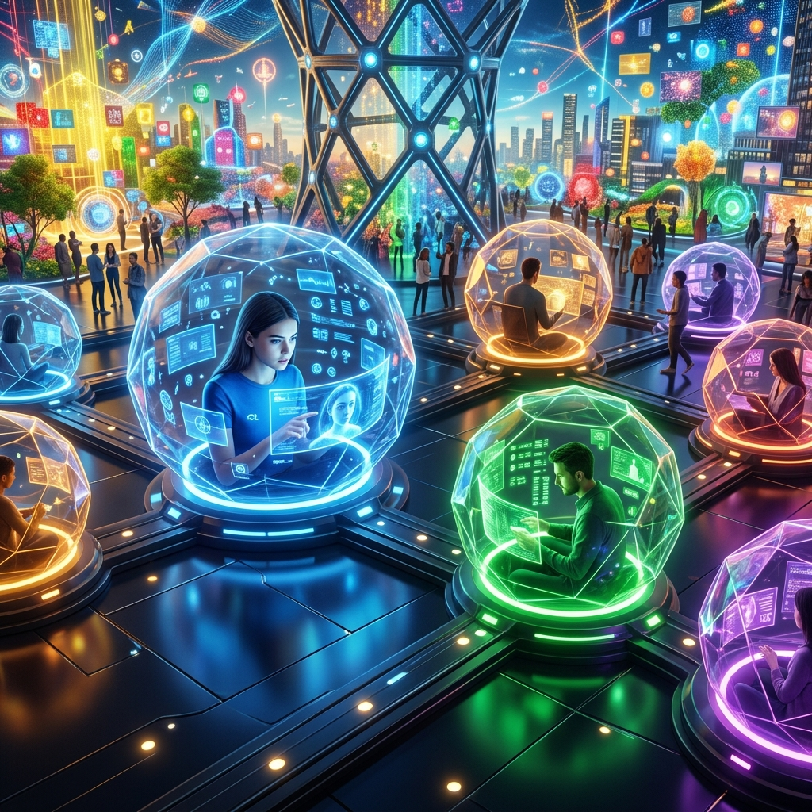

Tko ti kroji stvarnost?
Internet nije samo "prostor" gdje se nalazimo. To je društvena arhitektura koja putem algoritama selektira što vidimo, koga volimo i kako doživljavamo sami sebe.
Tri pogleda na Platforme Društvenih Mreža
Isti fenomen — TikTok, Instagram, Facebook — tri potpuno različita odgovora. Koja perspektiva ti se čini najbliža istini?
Platforme kao ljepilo društva
Društvene mreže imaju jasnu društvenu funkciju — povezuju ljude, ubrzavaju širenje informacija u krizama i stvaraju nove oblike solidarnosti i zajedništva diljem svijeta.
🔍 Ključno pitanje:
Koju funkciju ispunjava TikTok u životu tinejdžera?
Ti si produkt, ne korisnik
Korporacije poput Mete i Googlea grade moć temeljenu na tvojim podacima. Korisnici su besplatna radna snaga. Algoritmi pojačavaju nejednakosti jer siromašniji slojevi imaju manje digitalnih resursa.
🔍 Ključno pitanje:
Kome zaista služi tvoj Instagram profil — tebi ili oglašivačima?
Identitet se gradi lajkovima
Fokus je na mikrointerakcijama — kako lajk, komentar ili story mijenja naš doživljaj samih sebe? Svaka objava je pažljivo konstruiran nastup pred publikom (Goffman).
🔍 Ključno pitanje:
Zašto se osjećamo loše kad objava dobije malo lajkova?
Je li tvoj feed zaista tvoj?
Kada skrolaš TikTokom, misliš da biraš što gledaš. No, sociološki gledano, ti si unutar sustava koji je predvidio tvoje reakcije i prije nego što si ih sam postao svjestan. Algoritmi nisu neutralni alati; oni su agenti socijalizacije.
"Algoritam je tvoj novi roditelj, tvoj novi učitelj i tvoj novi najbolji prijatelj. On te poznaje bolje od tebe samog jer on ne sluša što kažeš, nego gleda što radiš."

Nevidljivi kavezi: Filteri i Mjehurići
Filter Mjehurić (Filter Bubble)
Personalizirani svemir informacija u kojem te algoritam okružuje samo onime što ti se već sviđa. Rezultat? Intelektualna izolacija bez da si toga svjestan.
Echo Chamber
Digitalni prostor gdje se tvoje mišljenje stalno vraća k tebi kroz druge ljude koji misle isto. To vodi ka radikalizaciji i polarizaciji društva.
Ekonomija pažnje
Na internetu tvoj novac nije bitan koliko tvoje vrijeme i pažnja. Algoritmi su dizajnirani da te drže "zakačenim" koristeći dopaminske petlje (lajkovi, notifikacije).
Algoritamska dominacija:
Što najviše utječe na tvoje mišljenje?
Vjerujete li informacijama koje vam algoritam preporuči?
Koliko puta dnevno provjeravate telefon bez razloga?
Simulacija društvene stvarnosti
Koliko je "društva" u društvenim mrežama zaista ljudsko? Danas se suočavamo s granicom gdje prestaje autentična ljudska interakcija, a počinje algoritamska simulacija.
Botovi i lažni konsenzus
Botovi nisu samo programi; oni su sociološki akteri. Oni mogu stvoriti lažni dojam popularnosti (prikazujući da veliki broj ljudi podržava neku ideju, iako su to samo strojevi) i tako umjetno promijeniti ono što društvo smatra "normalnim" ili "popularnim".
Dead Internet Theory
Radikalna teorija koja tvrdi da je internet prestao biti ljudski prostor oko 2016. Danas, AI generira sadržaj koji drugi AI lajka, dok ljudi promatraju tu digitalnu simulaciju misleći da sudjeluju u stvarnom društvu.
Gotovo trećina internetskog prometa su maliciozni botovi (Imperva Report, 2022)
"Problem nije u tome što strojevi počinju razmišljati kao ljudi, nego što ljudi počinju reagirati kao strojevi na programirane podražaje."
Goffman na Instagramu
Sociolog Erving Goffman davno je pisao o "upravljanju dojmovima". On kaže da smo svi glumci na pozornici. U digitalnom dobu, ta pozornica je tvoj profil.
Dramaturški pristup i "Izložbena stranica"
Front Stage (Pozornica)
Tvoj profil i objave. Prema istraživanju Perkov i Šarić (2021), to je tvoja "izložbena stranica" na kojoj si ti kustos vlastitog identiteta.
Back Stage (Zakulisje)
Prostor pripreme. Dok uživo (sinkrono) možemo pogriješiti, online imamo luksuz asinkrone komunikacije — mogućnost da popravimo svaku sliku i riječ.
Sociološki rizik: Kad "pozornica" postane jedina stvarnost koju priznajemo, gubimo kontakt s autentičnim sobom. To vodi do tjeskobe jer se stalno uspoređujemo s tuđim "najboljim trenucima".
Istraživanje: Samopredstavljanje na mrežama
Izvor: Perkov, I. & Šarić, P. (2021). Filozofska istraživanja, 41(3), 627–638.
🖼️ Koncept "Izložbene stranice"
U svom radu, autori naglašavaju da mi na mrežama ne "nastupamo" u klasičnom smislu (kao u kazalištu uživo), već gradimo izložbenu stranicu. To su reproduktivni artefakti — naši podaci, slike i postovi — koji ostaju trajno pohranjeni.
"Korisnici su sada urednici i stvaratelji – dizajniraju i stvaraju svoje samopredstavljanje, birajući što će staviti u prvi red ili sakriti u pozadinu."
⏳ Sinkrona vs. Asinkrona komunikacija
Sinkrona (U realnom vremenu)
Događa se odmah (razgovor uživo, video poziv). Ne ostavlja prostor za naknadno uređivanje. Goffman kaže da je ovdje rizik od "narušavanja nastupa" (zamuckivanje, sram) najveći.
Asinkrona (S odmakom)
Događa se kad nama odgovara (poruke, komentari, objave). Imamo luksuz da promislimo, obrišemo i "ispoliramo" sliku o sebi prije nego što je javno objavimo.
Nesrazmjer digitalne prisutnosti i stvarnih želja
Iako provodimo sate na mrežama, istraživanje pokazuje da fizički kontakt i dalje ostaje neprikosnoven. Ovo je ključni dokaz da digitalna komunikacija ne može u potpunosti zamijeniti ljudsku potrebu za neposrednošću.
Preferencije oblika komunikacije (%)
Korištenje mobitela na predavanju i u društvu"
Koliko često posežemo za mrežama u situacijama koje bi trebale biti fokusirane na druge ljude ili učenje?
📌 U društvu
Čak 42.4% studenata "ponekad" koristi mobitel dok su s prijateljima, što ukazuje na fenomen poznat kao phubbing (phone snubbing).
🎓 Na predavanju
Više od 20% studenata "često" ili "vrlo često" pregledava mreže tijekom nastave, što je izazov za tradicionalne oblike učenja.
Tko više uređuje izložbene stranica na društvenim mrežama?
Istraživanje je mjerilo sklonost asinkronom samopredstavljanju — odnosno, koliko se trudimo urediti objavu prije nego što je drugi vide. Rezultati pokazuju da su djevojke u prosjeku nešto sklonije pažljivijem kreiranju svog digitalnog identiteta.
*Ljestvica od 1 do 5. Viša vrijednost znači veću sklonost planiranju i uređivanju digitalnog nastupa.
Digitalni svijet nije alat koji koristimo, nego okruženje u kojem postajemo tko jesmo.
Biti medijski pismen danas ne znači znati upaliti kompjuter, nego znati kako te algoritam pokušava izmanipulirati.